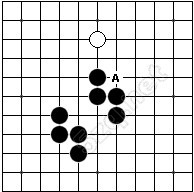
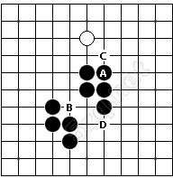
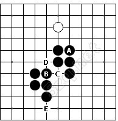
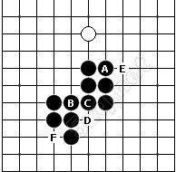
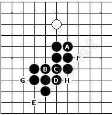
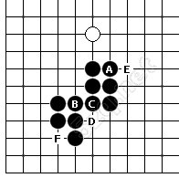
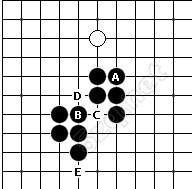
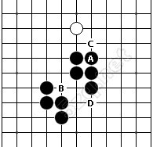
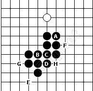

复杂禁手判断实例解析：试判断A点是否三三禁手？

图1
图1，试判断A点是否是三三禁手？
很显然，这是一个复杂禁手的判断。下面我们按照禁手判断的防法来进行判断。
要判断A点是否是三三禁手，就要看落子A，是否形成两个活三？

图2
图2，落子A，可以看到形成纵线和斜线两个三。
我们知道，判断一个三是否是活三，关键是判断其活四点是否可以落子形成活四。
纵线的活四点C和D均可以落子形成活四，所以纵线的三是活三。
斜线的活四点B可以落子吗？我们会发现不能一眼判断，因为落子B，又形成两个三。所以现在的关键，是要判断B点是否可以落子，如果可以落子，那么斜线的三就可以在B落子形成活四，就是活三，由此可推出落子A，形成俩活三，是三三禁手。反之亦然。

图3
图3，要判断B是否可以落子，实际上相当于要判断B是否是三三禁手，按照禁手的判断方法，还是要填子B，看是否形成两个活三。
如图，落子B后，我们会发现形成了纵线和横线两个三。
其中，纵线的活四点E可以落子形成活四，所以纵线的三是活三。
横线的活四点C可以落子吗？我们会发现也不能一眼判断，因为落子C，又形成两个三。跟上面一步一样，现在的关键，是要判断C点是否可以落子。
C可以落子吗？

图4
图4，相同的方法，要判断C是否可以落子，实际上相当于要判断C是否是三三禁手，按照禁手的判断方法，还是要填子C，看是否形成两个活三。
如图，落子C后，我们会发现形成了纵线和斜线两个三。
其中，斜线的活四点E和F可以落子形成活四，所以斜线的三是活三。
纵线的活四点D可以落子吗？我们会发现落子D，又形成两个三。跟上面一步一样，现在的关键，是要判断D点是否可以落子。D可以落子吗？

图5
图5，相同的方法，要判断D是否可以落子，实际上相当于要判断D是否是三三禁手，按照禁手的判断方法，还是要填子D，看是否形成两个活三。
如图，落子D后，我们会发现形成了横线和斜线两个三。其中，横线的活四点G可以落子形成活四，所以横线的三是活三。斜线的活四点E和F也可以落子形成活四，所以斜线的三也是活三。
这样可以推出，落子D形成两个活三，D是禁手不可以落子。
就是说填到D的时候，我们已经知道D不可以落子了，然后进行逆推。

图6
图6，因为D无法落子，所以填子C，纵线的三无法在D落子形成活四，所以纵线的三不是活三。
这样，填子C只形成斜线一个活三，所以C不是禁手，C可以落子。
然后继续逆推。

图7
图7，因为C可以落子，所以填子B，横线的三可以在C落子形成活四，所以横线的三是活三。
这样，填子B形成斜线和横线两个活三，所以B是禁手，B不可以落子。
然后继续逆推。

图8
图8，因为B无法落子，所以填子A，斜线的三无法在B落子形成活四，所以斜线的三不是活三。
这样，填子A只形成纵线一个活三，所以A不是禁手。
这样就判断出A，不是禁手。

图9
上面的推理过程是从定义入手，这个题目还可以用填子逆推法直接逆推。
图9，填子逆推法，就是要从判断的那个点开始填子，也就是A点，然后找活四点是否包含禁手，如果包含，就继续填子，一直填到能简单判断出为止，然后逆推，当然了，想直接逆推，还需要一个条件，这个复杂禁手是单分枝禁手。
这样，我们依次会发现A、B、C、D都包含禁手，需要依次填子，填到D可以简单判断出D是三三禁